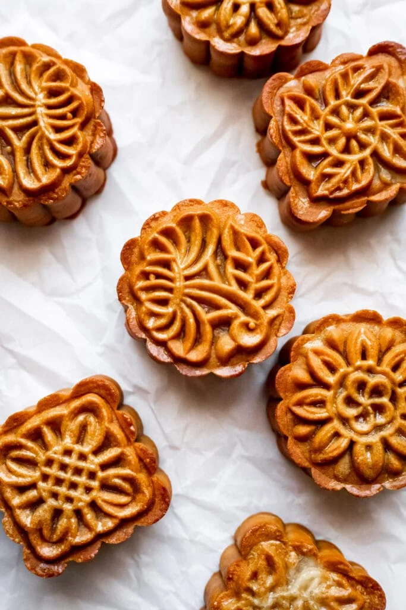

Mooncake

A mooncake is a Chinese bakery product traditionally eaten during the Mid-Autumn Festival. The festival is primarily about the harvest while a legend connects it to moon watching, and mooncakes are regarded as a delicacy. Mooncakes are offered between friends or on family gatherings while celebrating the festival.
Ingredients
Lotus Paste
- ¾ cup dried lotus seeds
- 3 tbsp peanut oil
- ¼ tsp salt
- ⅓ cup granulated sugar
- 1 ½ tbsp honey
Mooncake Skin
- 84 g golden syrup, (¼ cup)
- 25 g peanut oil, (2 tbsp)
- 7 g lye water, (1 tsp)
- 125 g all purpose flour, (1 cup)
Other Ingredients
- 10 salted duck egg yolks, optional
- 1 egg yolk
- 3 tbsp whole milk
Steps
Making the lotus paste and mooncake skin
- Soak dried lotus seeds overnight in water.
- The next day, drain the lotus seeds. Check and remove the green buds in the middle of the lotus seeds. Add them to a sauce pan with fresh water that just covers the lotus seeds. Simmer for 2 hours.
- Once done simmering, blend the lotus seeds and water until it is a smooth texture. Pour the lotus seed puree through a fine mesh sieve into a saute pan.
- Over medium heat, reduce the lotus mixture until it is 2/3 the original amount until it is as thick as a very thick soup. Add the peanut oil 1 tbsp at a time and stir after each tbsp is added. Make sure to stir consistently so an even amount of moisture evaporates from the lotus paste.
- Next, add the salt, sugar, and honey. Stir and flip the mixture constantly until it becomes a paste. The paste should be done once it starts to pull away from the pan and hold its shape. Set aside to cool in the fridge for at least an hour.
- While the paste is cooling, make the mooncake skin. Combine golden syrup, peanut oil, and lye water in a small bowl. Mix until incorporated. Add the flour and mix until a dough forms. Set aside to cool in the fridge for 30 minutes.
Forming the mooncakes
- Once the ingredients are cool, take out your ingredients. This should include your salty eggs, lotus paste, and mooncake skin dough.
- Using a scale, weigh out the ingredients for each mooncake. Place the egg and some lotus paste on the scale. Combined, they should weigh 30 grams. If you are using only lotus paste, use 30 grams of lotus paste. Adjust the amount of lotus paste if both weigh more or less than 30 grams. Add some mooncake skin dough to the scale. The total weight of all 3 ingredients should be 50 grams. Adjust the amount of skin dough if it is more or less.
- After you have weighed out the ingredients for 1 mooncake, form the mooncake. Roll the lotus paste into a ball and flatten it so it becomes a disk. Place the salty egg in the center of the disk and enclose the egg with the lotus paste. Once enclosed, roll it between your hands to create a smooth ball. If you are using only lotus paste, roll the lotus paste into a ball and proceed to the next step.
- Roll the mooncake dough between your hands to form a ball. Flatten it so it becomes a disk and enclose the lotus paste ball with the disk. The disk won’t completely enclose the lotus paste ball, so you’ll need to gently press the outside of the ball to stretch the skin over the lotus paste. The motion you want to make is similar to how you would put a rubber band onto a ball or a cylinder. You roll your fingers over the rubber band until it reaches the position you’re aiming for. Once you get skin around the lotus paste, roll between your hands to form a smooth ball.
- Repeat this process for every mooncake until you run out of lotus paste or dough. Now it’s time to put them in the molds! Prepare a baking sheet by covering it with parchment paper. Make sure to have your molds ready.
- Coat the mold with a light layer of flour. Shake out the excess. This will help the mooncake to release easily from the molds.
- Place each mooncake into the molds and press down firmly onto the baking sheet. Next, lift the mooncake a little bit and push it out of the molds. Repeat this for every mooncake. Make sure to brush off excess flour from the tops of the mooncakes.
- Let the mooncakes cool in the fridge for at least 30 minutes to an hour. I like to cool mine for an hour. The purpose of this step is to make sure the pattern on top holds in the oven.
Baking the mooncakes
- Preheat the oven to 350 degrees F (177 degrees C).
- Bake the mooncakes for 5 minutes.
- Make the egg wash by combining 1 egg yolk and 3 tbsp of whole milk. Whisk until smooth.
- Take the mooncakes out and brush them lightly on top with the egg wash.
- Put them back in the oven and bake for another 12 minutes.
- Cool them for 5 minutes on the baking sheet and then on a cooling rack to cool completely.
- For the best results, put them in the fridge to rest for 24 hours before eating.